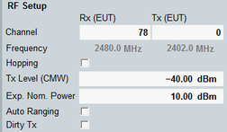

RF Setup
The main view provides test mode settings and power settings for fast access. The set of displayed parameters depends on operating mode.

RF setup (loopback test)
The settings are the same as in the configuration tree:
- Most important RF frequency settings for RF tests
For parameters, refer to "RF Frequency".
Hopping is relevant only for BR and EDR. - RF power settings
For parameters, refer to "RF Power Settings".
In addition, the parameter input level is displayed instead of expected nominal power when auto ranging is enabled. This parameter adjusts the power settings automatically, according to the predefined and measured values. - Dirty transmitter enabling
For parameters, refer to "Dirty Transmitter Configuration".